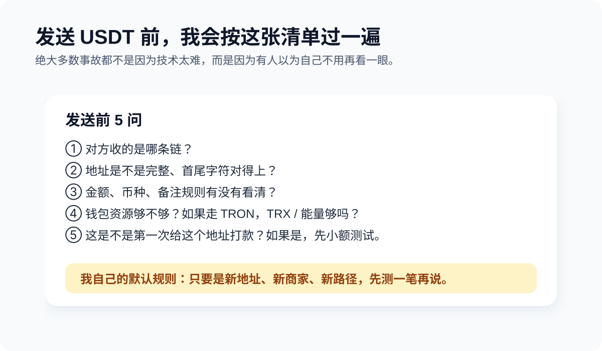

怎么发送 USDT
Chapter 2.5 · Transfers · Last updated: 2026-04-14

USDT 转账看起来像一件很简单的事：复制地址，填金额，确认。但我先说结论，真正把人送进坑里的，通常不是按钮多难找，而是 网络、地址、资源、第一次没测试 这几件小事一起出问题。很多人就是在“这有什么难的”这一秒，开始交学费。
TL;DR
如果你问我发 USDT 前最该检查什么，我的答案一直很稳定：收款方支持的网络、目标地址、钱包资源够不够、这是不是第一次给这个地址打款。只要是第一次，我都建议先测一笔小额。慢一点，通常比补救便宜得多。
为什么“网络”比“币名”更重要
我见过最常见的一类事故，就是对方只说一句“发 U 给我”，然后转账的人默认理解成“随便哪条链都行”。实际完全不是。USDT 可以存在于不同网络，比如 TRC20、ERC20 等。币名一样，不代表路线一样。
所以发送前先问自己一句：对方收的是哪条链上的 USDT？ 你把这句话问明白，已经能避开一大半低级事故。
发送前建议检查 5 件事
- 收款方支持的网络：这是第一优先级。
- 地址是不是完整、准确：不要手输，尽量复制后再核对首尾字符。
- 金额是不是正确：尤其是服务商付款，金额和币种通常都有固定要求。
- 钱包资源够不够：如果你走 TRON 路线，可能还要考虑 TRX / 资源问题。
- 是不是第一次给这个地址转账：如果是，先小额。
我自己的默认检查顺序
- 先看对方支持的链
- 再看地址
- 再看金额和规则
- 最后看自己钱包资源够不够
这个顺序不是唯一正确答案，但它能最大化降低“我只差最后一步时才发现自己少看了一行”的概率。
常见发送流程
1. 确认收款规则
我自己的做法一直是先看规则，再点发送。不是所有收款页面都只写一个地址。很多还会写：最低金额、支持链、备注规则、到账时效。先看完，再动手。
2. 在钱包里选择正确资产与网络
如果你持有的是 TRC20 USDT，就用对应路径发送。不要指望系统自动帮你跨链理解。系统有时候比你还乐观，链上可不会。
3. 复制地址后，至少核对两遍
最简单的方法：看前几位、后几位，以及它是不是你预期的链格式。我知道这一步很像废话，但大多数事故都不发生在高深环节，而发生在“我觉得不用看了”。
4. 第一次先小额测试
这一步听起来保守，但它比事后补救便宜太多。我自己的原则很简单：只要是新地址、新商家、新链路，先测一笔再说。
地址污染（address poisoning）：2025 年最贵的事故类型
这是你必须专门了解的一种骗局，因为它已经从「理论风险」变成了真实大额案件：
- 2025-12：单一受害者在复制交易历史里的「相似地址」后损失 $50,000,000 USDT。
- 2025-05：另一位在 3 小时内被同一手法骗了 $2,600,000 × 2 次（第一次后没改习惯）。
攻击原理：骗子先用脚本生成一个首尾几位和你真实收款地址完全一样的地址（中间随机），然后往你的地址打 0 USDT（TRC20 允许 0 金额转账）。这笔 0 USDT 会出现在你钱包的「交易历史」里。下次你想给老朋友转账时，如果你习惯从历史里复制地址，就可能复制到骗子的假地址 —— 前几位后几位都对得上，中间随便哪几位肉眼都难发现。
怎么防
- 永远不要从交易历史里复制地址。从对方给你的原始来源（微信、邮件、二维码）重新拿。
- 核对至少前 6 位 + 后 6 位 + 中间抽样 2 位，不要只看前 4 后 4。
- 给常用地址加备注，在钱包地址簿里管理，别每次靠记忆。
- 大额前先发 1 USDT 测试，等对方确认收到再发剩下。
最容易踩的坑
- 只看见 USDT，不看网络
- 复制了旧地址或错误地址（参考上一节「地址污染」）
- 第一次直接大额
- 忽略 TRON 资源问题（钱包只有 USDT 没有 TRX）
- 对方要求备注（memo / tag），你没看见 —— 这类常见于交易所入金，漏备注钱会进不去你的账户
Beginner-friendly option
如果你需要一个更容易上手的钱包来完成 TRON / USDT 的实际收发，imToken 依然是我会给新手的一个选项。原因不是它能替你避免所有错误，而是它更适合作为你第一次建立正确收发流程的工具。
风险提醒
区块链转账通常不可撤回。尤其在你给交易所、服务商、陌生商家、支付中间层转账时，务必同时确认链、地址、金额和规则。如果你不确定，暂停，不要赌。